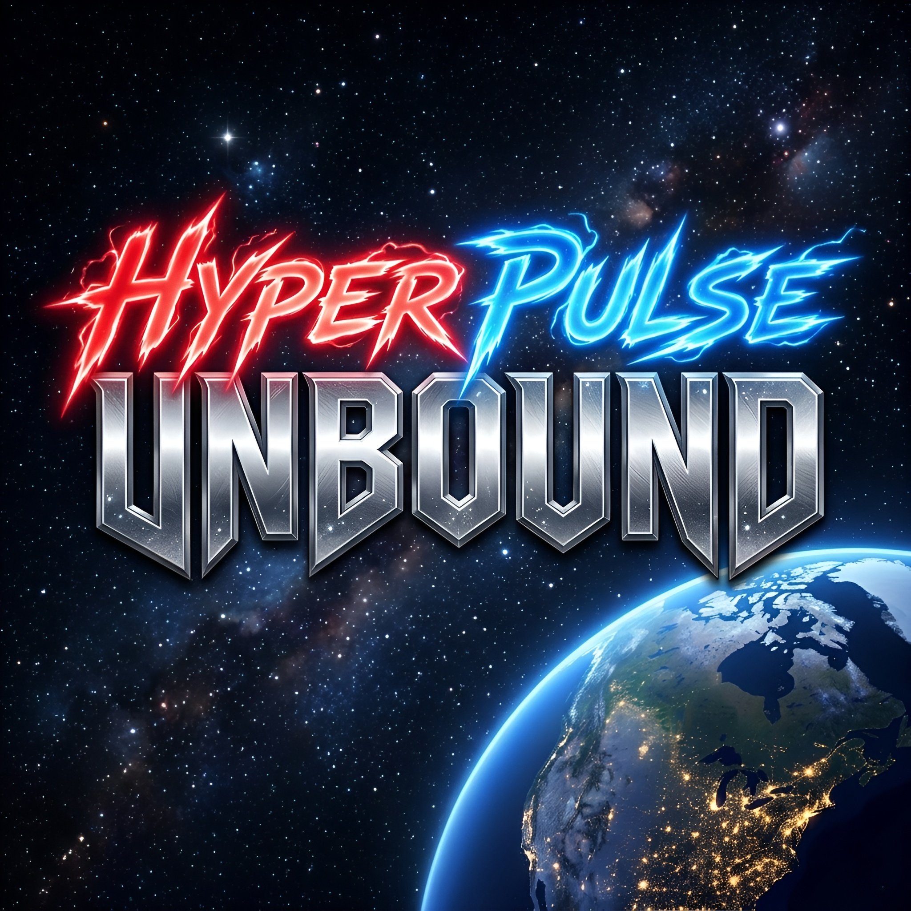

HyperPulse Unbound começou como um monte de ideias soltas e rascunhos lá no início de 2024, quando a inspiração começou a ganhar forma na minha cabeça. Com o passar dos meses, fui dando vida aos personagens, à história e aos mundos que fazem parte desse universo, tudo inspirado por games, animes e animações das décadas de 2000 e 2010 que sempre me marcaram, mas só em 2025 decidi levar isso adiante e transformar essas ideias em algo concreto. A obra mistura anime ocidental, ação, fantasia, ficção científica e romance, refletindo a intensidade, a variedade e a emoção que quero passar em cada capítulo dessa jornada.
Esta obra é recomendada para maiores de 16 anos devido à presença de violência gráfica estilizada, linguagem forte e elementos sobrenaturais. A narrativa prioriza ação, aventura e espetáculo, inspirando-se no conceito de Rule of Cool e valorizando cenas marcantes, criativas e exageradas acima do realismo.